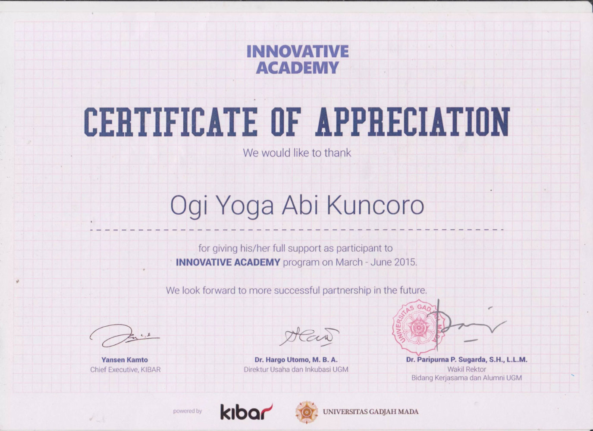

ogiyak
Product · UI · UX Designer
Some good design thougts lay here.
User Friendly
In touch mode, give adequate (e.g 20px) space between icon and outline. It gives clearance.
— Google Material Design
Prototyping
Prototyping allows us to validate design early in software development life cycle. The process helps spark innovation, encourage user-centered thinking, and get you to product launch faster.
— Design Sprint
Usability Evaluation
Heuristic testing was more effective in uniquely identifying minor problems. User testing, however, was more effective than heuristic evaluation in uniquely identifying major problems.
— Layla Hasan (2012)
Perceivable
Provide text alternatives for any non-text content so that it can be changed into other forms people need, such as large print, braille, speech, symbols or simpler language.
— WCAG 2.0
Design Cycle
After reviewing papers and books, I found 3 main processes of design development process. They are: Analysis, Design, and Evaluation (Repeat)."
— Me
Natural Design
Luke Wroblewski talked about input-form and natural design in Conversions, 2017. He told about design solution that not always screen, e.g IOT Smarthome, Tide Pods, etc. He said "What did you do? Are you designing just by moving pixels?". Then he explained natural design, which is based on natural way of human interactions.
Iteration & Time Span
Two main ideas in agile development are Iteration and Time span. Iteration is more natural than making perfection. Time span means giving a special time which duration is set. Time span may give motivation. Related talk: Inside the mind of a master procrastinator.
— Me
Recorded projects and works lays here. The projects sparated into Web and Printed projects.
This is one of my KKN-UGM 2015 Science and Technology project. A responsive website for Desa Wisata Serang, Purbalingga. We developed the website for about 2 months, including the admin page for articles management. My part is to make user interface using bootstrap and some customized css.
It is my KKN's leader project proposed to help Desa Serang gets more variety plants and to strengthens the soil. I helped him creating responsive landing page and poster. It developed using Bootstrap and some basic HTML & CSS.
allshop is my thesis's object. It's a prototype of Bussiness-to-Consumer E-commerce. Prototype used to evaluate design development process lies on User Centered Design and Agile Development researches nowdays. The process uses collaboration and summary of LeanUX, Scrum, and Design sprint along with some design methodes such as Information System Research (ISR), ISO 9241-210, etc.
Kanhan500 is a Japan-Korea basic dictionary. It helps us to understand both Kanji (Japan) and Hanja (Korea) characters effectively. Kanhan500 consist 500 Kanji and 500 Hanja characters along with its picture, writing order, and sentence samples. Kanhan500 is product of PIMNAS XXVII PKM-KC 2014. My job was designed it into a real product and prepared all PPTs, Poster, social media etc.
Cembako is startup-coursework. Cembako aims to create stability in market price, override the confusion in any special events. The main function is to giving factual information about commodities price analyzed by government and also to monitoring prices in traditional markets reported by society itself. I was the CTO and also design apps wireframe, catalog, x-banner, and apps UI.
Some collections of academic achievements lay here.
TOEFL ITP Score 527 at 2015

Lumia Apps Olympiad 1st Place KrazyMarket Category. Video here.
Innovative Academy 2015
PIMNAS XXVII PKM-KC "Produksi Kamus Kanhan500" 2014